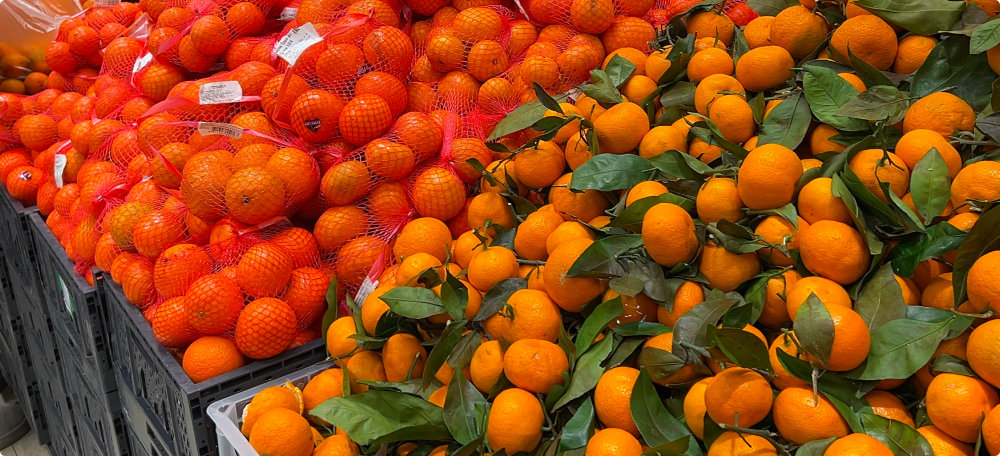
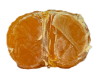
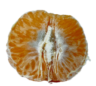
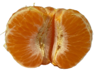
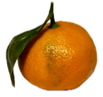
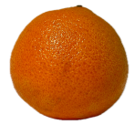
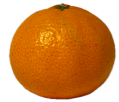
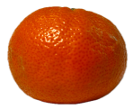
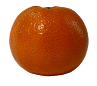

Как выбрать вкусные мандарины в магазине?
На рынке покупать мандарины просто: попробовал — забрал те, что понравились. В магазине так сделать нельзя, поэтому приходится ориентироваться только на внешний вид. Но даже среди ярких, оранжевых плодов попадаются сухие и кислые. Я поговорила с экспертом и собрала советы, которые помогут выбрать вкусные мандарины в супермаркете.
Марина Кумерина ,
5 лет работает поставщиком фруктов для торговых сетей
Потрогайте
Спелый фрукт — мягкий, но упругий, с гладкой кожурой. Недозрелый мандарин плотный и будет таким, даже если полежит неделю дома. Перемороженные или подгнившие плоды рыхлые, поэтому на месте касания останется вмятина. Кожура мандарина должна плотно прилегать к мякоти: если между ними есть воздух — мандарин высох, и в нём будет мало сока.



Мягкий, как переспевший помидор
Перемороженный или гнилой мандарин внутри мягкий, с водянистой мякотью. Дольки имеют бледный цвет и часто рвутся. Такой фрукт может быть безвкусным или кислым, с неприятным запахом брожения.
Твёрдый, как лимон
Недозревший мандарин имеет плотную, жёсткую мякоть. Дольки твёрдые, с заметными белыми прожилками. Недозрелый мандарин кислый, с небольшим количество сока. Запаха нет.
Мягкий и упругий, похож на спелый персик
Внутри спелый мандарин сочный и мягкий. Дольки гладкие, ярко-оранжевого цвета, легко отделяются друг от друга. Кисло-сладкий или сладкий вкус, с ярким цитрусовым запахом.
Возьмите мандарин в руку и слегка надавите на кожуру пальцем. Спелый фрукт будет мягким, но восстановит форму
Рассмотрите плод
Свежий мандарин имеет оранжевый или оранжево-красный цвет в зависимости от вида. Небольшие зелёные пятная допустимы, особенно у ранних сортов, например, «шива-микан». Кожура должна быть ровной и чистой, без трещин и сухих участков. Если плод выглядит слишком блестящим — его обработали воском, чтобы сохранить внешний вид. Воск не влияет на вкус, но перед едой мандарин нужно помыть.

Не оценивайте качество мандарина по наличию ветки с листочком — их оставляют только для красоты

Рубцы на кожуре мандарина появляются из-за трения о другие плоды, ветки или при резких перепадах температуры. Рубцы не влияют качество фрукта.

Коричневые точки — грибковая болезнь, меланоза. Она не портит вкус мандарина и не опасна для человека.

Чёрные пятна на кожуре указывают на начало гниения. Фрукт будет мягким и водянистым, с неприятным запахом. Такой мандарин лучше не есть.
«Мандарины должны перевозить и хранить при температуре не ниже 2 °C, иначе они перемерзают и теряют вкус. Такие плоды отличаются визуально: у них тусклая кожура с коричневым оттенком».
Марина Кумерина, эксперт
Взвесьте в руке
Вес мандарина напрямую указывает на его сочность: cочный мандарин будет тяжёлым для своего размера, а лёгкий фрукт окажется сухим внутри.
Возьмите два мандарина одинакового размера и по очереди взвесьте их в одной руке. Сочный фрукт будет тяжелее
Найдите любимый сорт
Насколько легко чистится мандарин и будут ли в нём косточки, визуально понять невозможно — это зависит от сорта. В мире существует 200 видов мандаринов, но в России продают только 10. Я сходила в ближайшие супермаркеты и купила 3 самых популярных сорта: оценила их вкус и проверила, как быстро они чистятся.
10
сортов мандаринов
продают в России



«Клементин», Марокко:
— почистила за 25 секунд;
— кожура плохо отделяется;
— много мелких косточек;
— кисло-сладкий, мало сока.
«Уншиу», Абхазия:
— почистила за 17 секунд;
— кожура легко отходит;
— нет косточек;
— сочный, с кислинкой.
«Муркотт», ЮАР:
— почистила за 12 секунд;
— кожура отходит сразу;
— мало косточек;
— сочный, сладкий.
«Когда выбираете мандарины по сорту, ориентируйтесь на сезон. Марокканские «клементины» покупайте с ноября по декабрь. Пик сезона «уншиу» из Абхазии приходится на декабрь. Самые сочные мандарины «муркотт» из ЮАР ищите с декабря по февраль».
Марина Кумерина, эксперт
Чек-лист перед покупкой
Потрогайте мандарин. Выбирайте мягкий, но упругий фрукт, который после нажатия восстанавливает форму.
Рассмотрите кожуру. Плоды с рубцами и коричневыми точками брать можно, с тёмными пятнами — нет.
Взвесьте в руке. Сочный мандарин будет тяжёлым для своего размера, лёгкий фрукт — сухой внутри.
Найдите свой любимый сорт. Как легко чистится кожура, какой мандарин на вкус и есть ли в нём косточки зависит от вида.

Иллюстрации — личные фотографии.
Шрифт: Inter, PT Sans.